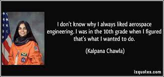

| NAME | DOB & DOD | PIONEER |
|---|---|---|
| SL.No | TITTLE |
|---|---|
| WHAT IS AN AEROSPACE ? | |
| WHAT TECHONOLOGY USED ? | |
| HISTORY OF AEROSPACE | |
| FUNCTIONAL SAFETYS | |
| MANUFACTURING OF AEROSPACE | |
| SPINOFF TECHONOLOGYS |
*WE HAVE REFFERED FROM SO MANY BOOKS,OTHERWEBSITES,etc... TO MAKE A CONCLUSION.
*WE USED MANY HTML TAGS FOR MAKING THIS WEBSITE.
*WE ALSO USED TEXT TAGS,FORM TAGS,LIST TAGS,TABLE TAGS.
